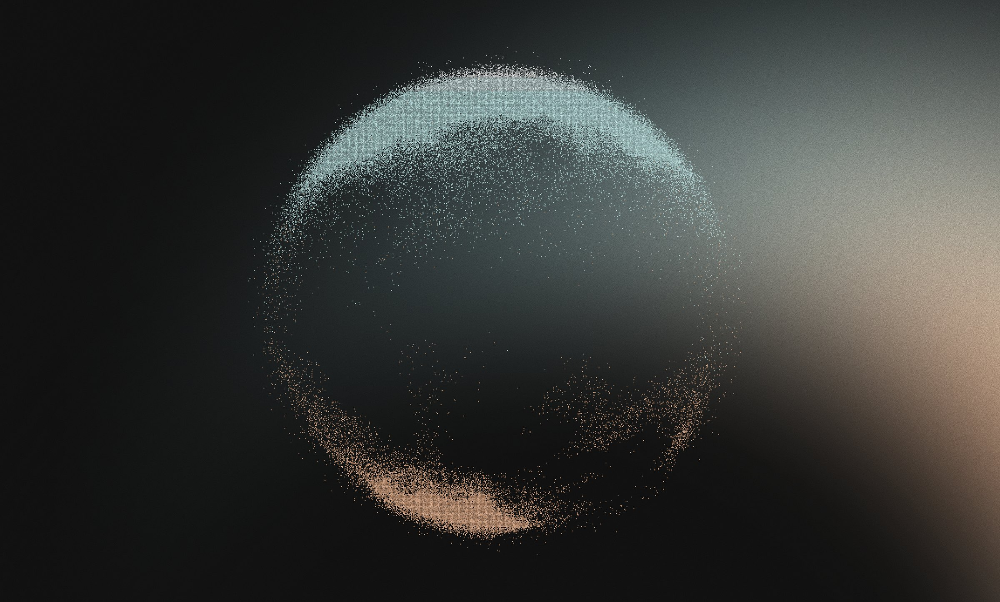

Cybertrends Brand Identity
Brand identity for Cybertrends, a company building digital protection products. Security is a noisy, fear-driven category, so the identity is built around one idea: clear sight. It turns scattered risk into calm, real protection, without theatre or jargon.
The visual language comes from a single metaphor. Noise is the threat landscape, scattered grain with no shape and no meaning. The orb is the protection, grain gathering into a shell around what matters. Sight is the promise: what matters stays sharp and the rest falls back into grain.
That grain runs through everything, from particle type and the orb to photography treated with the same texture. The voice follows the same rule. Calm, clear and quietly confident: plain words, no dramatised threats, judged by what we remove, not what we add.

Like what you see?
 Write me
call me
or
LinkedIn ↗
Write me
call me
or
LinkedIn ↗